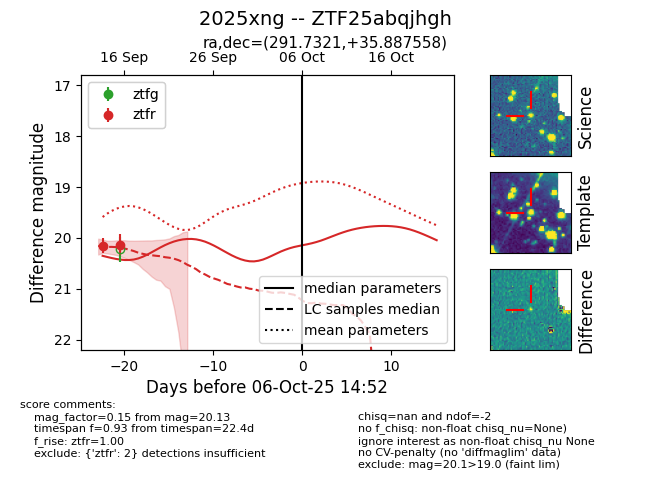
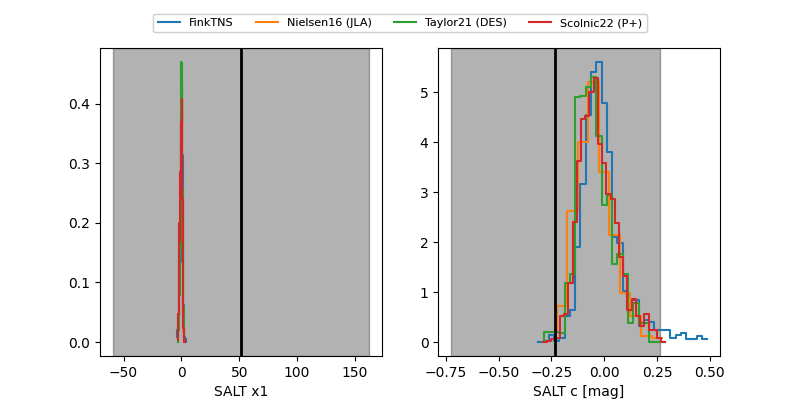

FINK: ZTF25abqjhgh
Lasair: ZTF25abqjhgh
ALeRCE: ZTF25abqjhgh
TNS: 2025xng
YSE: 2025xng
ZTF25abqjhgh (ztf,fink)
2025xng (tns,yse)
equatorial (ra, dec) = (291.7321,+35.88756)
galactic (l, b) = (68.7962,+8.97966)


last ztfr=20.13
2 ztfr detections